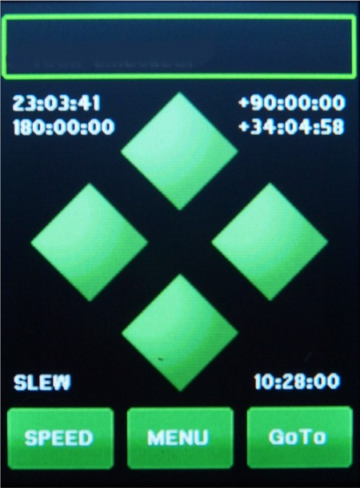

|
Gemini-2 and Gemini-1 Telescope Mount Controllers Website and Tutorials |
| Interactive Hand-Controller Menus - click on green buttons to Navigate |
| To see what the numbers on this screen means Select any number.  |
This is the main screen where all other functions can be
accessed: The top box has 2 message lines to display the current status at the top and the previous one below. This sometimes updates when other functions are being performed, such as GOTO's. The four diamond buttons are movement buttons. The top and bottom button are for the Dec, and the left and right button are for RA. They will move the mount at the speed selected by the speed button on the lower left. The Speed button will take you through Slew, Move, Center and Guide speeds, and then back to Slew. The direction buttons have two modes of operation. If you push down and slide you finger off the button the mount will keep moving in the direction of the button until you press it again. If you press and hold, and the let off without sliding your finger off, it will work like a normal button. Since the graphics screen is not multi-touch, if you use the finger slide off method, and touch the opposite button, the mount will speed up. The speeds are changed in the same order as the speed button. Also see sticky buttons explanation Also see What the numbers on screen mean. |
|
The Menu button will take you to Main Selection Menu. The GoTo button will take you to the GOTO menu where you select a Catalog, The Solar System, Coordinate input, use a bookmark, or Park the mount.
The buttons on the back of the hand controller work just like the buttons do on the Gemini-1, and are multi-touch. |